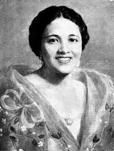
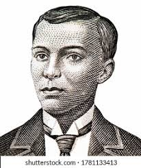
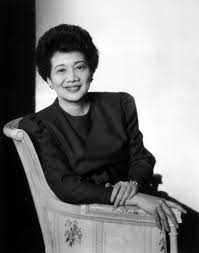
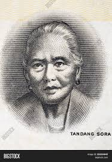

|
José Protasio Rizal Mercado y Alonso Realonda, commonly known as Jose Rizal was a patriot, doctor, writer, and nationalist famous for his literary works. Born on June 19, 1861, he lived in Calamba with his parents Francisco Mercado II and Teodora Alonso Realonda, as well as his other nine sisters and one brother. He died on December 30, 1896 at the age of 35 in Rizal Park, Manila. |
Famous for his novels "Noli Me Tángere" (1887) and its sequel, "El filibusterismo" (1891), Rizal is one of the most revered figures in Philippine history. He was a man of letters, an inspiration to the Philippine nationalist movement. |
|  |
María Josefa Gabriela Cariño de Silang, also known as Gabriela Silang, La Generala, and Joan of Arc of Ilocandia, was a Filipino military leader. Born on March 19. She died on September 20, 1763 at the age of 32 in Vigan City as Silang and her troops were executed by hanging in Vigan's central plaza. |
known for her role as the female leader of the Ilocano independence movement from Spain. |
|  |
Andrés Bonifacio y de Castro, commonly known as Andres Bonifacio, was a Filipino revolutionary leader. Often called "The Father of the Philippine Revolution", he is considered as a national hero of the Philippines. Born on November 30, 1863, he lived in Tondo with his parents Santiago Bonifacio, Catalina de Castro, as well as his five siblings named Procopio Bonifacio, Espiridiona Bonifacio, Ciriaco Bonifacio, Maxima Bonifacio, and Troadio Bonifacio. He died on May 10, 1897 at the age of 33. |
founded the Katipunan (K.K.K.) in Manila, modelling its organization and ceremony on that of the Masonic order. He promoted Filipino nationalism and advocated for equality and justice. |
|  |
Maria Corazon "Cory" Sumulong Cojuangco-Aquino was a Filipino politician who served as the eleventh President of the Philippines from 1986 to 1992. Born on January 25, 1993, Her spouse, Benigno S. Aquino Jr. and her had five children named Benigno Aquino III, Kris Aquino, Pinky Aquino-Abellada, Maria Elena Aquino-Cruz, and Victoria Elisa Aquino-Dee. She died on August 1, 2009 at the age of 76 |
leading of the People Power Revolution in 1986, she restored democratic institutions, and advocated for peace. She is a symbol of moral leadership. |
|  |
Melchora Aquino de Ramos, also known as "Tandang Sora" was a Filipino revolutionary. She was given the nickname due to her age during the Philippine Revolution. She is also known as the "Grand Woman of the Revolution" and the "Mother of Balintawak" for her contributions. She was born on January 6, 1812. |
she gave medical attention, fed and encouraged the revolutionaries with motherly advice and prayers. She also hosted secret meetings of the Katipuneros (revolutionaries) in her house in August 1896. |